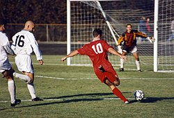
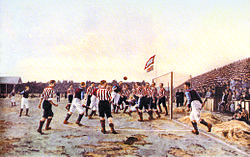
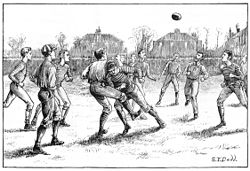

Mi a foci?
A labdarúgás (angol eredetű szóval football, magyaros átírásban futball, a köznyelvben
gyakran
foci)
labdajáték
, amelyet a pályán két, egyenként 11 labdarúgóból álló csapat játszik egymás ellen.
A játék célja, hogy a rendelkezésre álló idő alatt a labdát az ellenfél kapujába juttassák, lehetőleg minél többször, és így
minél több gólt szerezzenek.
A Nemzetközi Futballszövetségi Testület
(International
Football Association Board IFAB)
, a játék szabályalkotó szervezete.
1886-ban ez a szervezet fektette le a futball szabályait.


